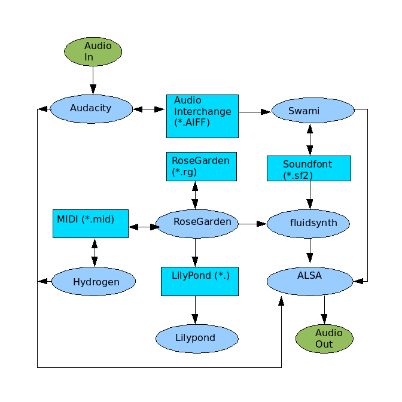

Music
This document describes various software and hardware. All of the software used here is free and is very high quality. Most of this document was tested using Ubuntu.
Some parts of learning sound can be very difficult because there is so much confusing information on the internet, and it is difficult to know which parts relate to which.
The following programs are useful to create sound.
| Ardour | Recording and mixing |
| Fluidsynth | Synthesizes sounds that can be played from Rosegarden |
| Hydrogen | Drum machine |
| Jack | Linux audio connections |
| Lilypond | Music engraving (printing) |
| Rosegarden | Music editing software |
| Rythmbox | Audio player |
| Soundfont | Synthesis for MIDI |
| Swami | Combines soundfonts |
Run Rosegarden with sound
See Rosegarden.html for how to edit notes.
For Windows, download from
https://www.rosegardenmusic.com/.
For Ubuntu, use the package manager or:
sudo apt-get install rosegarden
This application has a notation editor that can be used to create music, but does not play music by itself. For it to play music, use the package manager to download fluidsynth unless you have a very special sound card or MIDI support. See the hardware section in this case.
Fluidsynth is a software synthesizer. Fluidsynth requires a sound font in order to make sounds. See the sound font section below for more information.
Jack does not have to be used to get this software running together.
The software section below lists additional software that can be downloaded for free. They are all very good, high quality applications.
Music Software Diagram
The following diagram shows some of the things that can be done with these programs. Much more than this can be done once Jack is used along with other music hardware. This diagram shows a very simple flow of the audio information. Many samples and scores can be downloaded from the internet. This means that a microphone or other music hardware is not required.

Software
Downloading Software
Software
It is easiest to download these in Ubuntu using the package manager. Simply search for the name and then select the package to download.
Sound Fonts
A sound font file is a file that contains waveforms for many instruments. Each sound file may contain different instruments, and different sounds for each instrument. There is sort of a MIDI standard, so that some sound font files will contain certain instruments at certain locations, and so that different songs can be played using a sort of standard soundfont.
There are many sound fonts that can be downloaded from the internet. Every sound file is different, choosing a good one can make a huge difference. Most places recommend the Musica Theoria 2 sound font from hammersound, but I have never been able to download this file. So I tried some Gort sound files, and these sounded terrible on my system. Eventually I found one from http://josefhuber.com that was better. But the one I like most is the PC51f.sf2 from http://www.personalcopy.com/home.htm.
MIDI Files
MIDI files only contain the notes/timing of the music. The notes are read from the file, and used with a sound font to create sound.
I found that this site is very good and fast for classical midi downloads.
http://www.classicalmidi.co.uk
Audacity
Audacity can edit recorded or downloaded audio samples. It can read and write many file formats.
To export AIFF samples, use the Edit/Preferences menu to select the file formats.
Audacity allows creating Lisp type Nyquist programs. There are instructions here
http://audacity.sourceforge.net/help/nyquist
FluidSynth
FluidSynth only needs to be used if there is no hardware available that can do synthesis.
See the hardware section for more information. Fluidsynth can load sound font files. See the sound font section for more information. A graphical interface to fluidsynth is called qsynth for anybody that doesn't want to use a shell/command prompt. I have actually found this harder than using fluidsynth from a terminal. I run fluidsynth with the following command line.
fluidsynth soundfont.sf2
After fluidsynth has loaded a sound font file, it is possible to play a note
using the following:
noteon 5 77 108
Lilypond
Lilypond will engrave high quality sheet music. Rosegarden will output files that lilypond can use to print the music. Lilypond does not have a user interface since it just reads the input files.
RoseGarden
RoseGarden is an awesome application.
To make sound, it can use Jack to route the MIDI output into some other MIDI device. If there is no MIDI hardware or hardware synthesizer card connected to the PC, then it is possible to run fluidsynth along with Rosegarden to output sound. It is also possible to record and save it as a sound file using Audacity.
See Rosegarden.html for how to do this.
An easy way to get started is to download some MIDI (files with .mid extension) file from the internet, and use File/Import to load it into RoseGarden. Then double click on the tracks to edit the music.
Sox
To use sox, create a file named midi2avi with the following.
#!/bin/sh
# convert midi to avi
fluidsynth -i -a file soundfont.sf2 midifile.mid
sox -r 44100 -w -c 2 -s fluidsynth.raw fluidsynth.wav
Then in a command shell, enter "sh midi2avi". At the moment, the wave files produced only have a limited number of voices. I am not sure if this is the cause of Rosegarden or
or Sox. I may try Timidity at some point to resolve this problem.
Swami
Swami is not the highest quality program, but does do the job well when it is working. The user interface is not polished, and I have had the program crash.
The easiest way to get started is to open an existing sound font file (*.sf2), and then go to Samples/User and select a sound. Then clicking on the keyboard will make that sound.
The hierarchy is that Presets that are Melodic are made up of Instruments. Instruments are made up of Samples. This allows that samples can be taken for different frequency or note ranges. The Swami UI is a bit strange, since to add a sample to an instrument, the sample must be selected, and then the instrument must be right clicked, and then select paste. In other words, whatever is currently selected can be pasted.
Swami can read AIFF are audio sample files that can be downloaded from the internet. Audacity can also read and write AIFF samples.